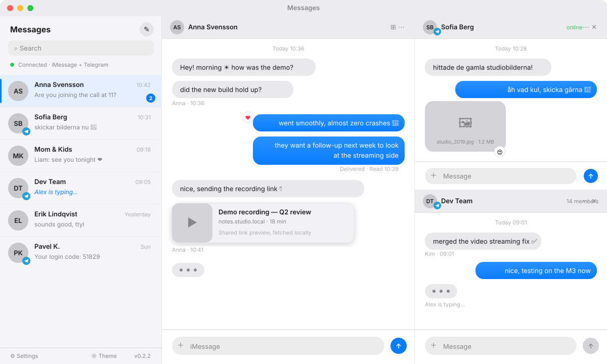

Messages¶


A native macOS desktop app that puts iMessage, Telegram and Slack in one unified inbox. Conversations from all three services live in a single chat list, sorted by time, with one clean Messages-style interface. iMessage runs through a self-hosted BlueBubbles server; Telegram connects directly over MTProto; Slack uses the Web API with Socket Mode for realtime.
This is a real Tauri 2 application, not a webpage in a wrapper. It installs into
/Applications, lives in the menu bar, launches at login, stores credentials in the macOS
Keychain, and delivers native notifications and deep links. A browser-served web build
exists for development, but the shipping product is the macOS desktop app.
Stack: Tauri 2, Rust, React, TypeScript, Vite, Tailwind, Zustand. The messaging
backends are a Cargo workspace of focused crates (shared, database, cache,
telegram-api, telegram-core, slack-core) compiled into the same binary.
TL;DR — from zero to unified inbox¶
On a Mac signed into iCloud with Messages working:
- Install the app. Download the DMG for your architecture from the
latest release, drag it to
/Applications, then clear the quarantine flag (builds are unsigned):
-
Run the first-launch wizard. Open the app and pick "Set it up for me" — it downloads, installs, and configures a local BlueBubbles server (localhost only, no tunnels) and starts it.
-
Grant the macOS permissions the wizard walks you through: Full Disk Access and Local Network are the two the server needs to read and serve your messages (Local Network is a toggle in the pane if no prompt appears). Hit verify — it waits and restarts the server itself if needed.
-
Add Telegram (optional). On the final wizard step, sign in with your phone number or QR code. Done — one inbox, both services.
-
AI auto-reply (optional). Point Settings → AI auto-reply at any OpenAI-compatible endpoint (e.g. Ollama:
http://your-gpu-box:11434/v1+ a model likegemma3:12b), then flip the robot icon in any chat you want answered for you.
Reset everything for a fresh run with scripts/reset-demo.sh --server.
Download¶
Grab the latest signed-for-your-own-machine build from the releases page. Pick the Apple Silicon DMG on M-series Macs and the Intel DMG on older ones.
Release builds are currently unsigned. On first launch, see First run for clearing the Gatekeeper quarantine flag.
Features¶
Unified inbox¶
- One chat list interleaving iMessage, Telegram and Slack conversations, sorted by most recent activity.
- Conversations are grouped by account — iMessage, each Telegram login, each Slack workspace — under collapsible headers that keep an unread badge when collapsed. With a single account the list stays flat.
- A consistent Messages-style interface across all three services — same bubbles, same composer, same behavior.
- Split iMessage/SMS threads for the same contact (as served by pre-macOS-26 hosts) are merged into one conversation, the way Apple's Messages app does — one list entry, interleaved history, replies routed to the service the contact last used.
- Source-specific code stays cleanly separated internally, but the user sees one app.
iMessage (via BlueBubbles)¶
- Send and receive texts, replies, tapbacks, and image/video/file attachments.
- Contact photos from the server's Contacts database (no Private API needed), shown in the chat list and as mini avatars next to incoming messages; downscaled thumbnails keep memory low, and a settings toggle switches all avatars off (initials only).
- Optimistic outgoing rendering, deduped against server echoes.
- Inline downscaled image thumbnails with a full-size preview dialog; video plays inline; other attachments render as links.
- Rich link previews fetched locally through the Tauri HTTP plugin (no CORS workarounds).
Telegram (via MTProto)¶
- Log in by phone number and code, or by QR, with two-factor password support.
- Multiple accounts.
- Messages, reactions, typing indicators, presence, and avatars — including sender photos next to messages in group chats.
- Media (photos, stickers, video, documents) fetched through an encrypted local cache and streamed from disk to keep memory low.
- Send messages and file attachments; edit, delete, and mark read.
Slack (via Web API + Socket Mode)¶
- Multiple workspaces, each with its own tokens in the Keychain. Channels, private channels, group DMs and DMs appear in the unified list; bots and Slack's own noise sections are filtered out.
- Realtime messages, edits and deletes over Socket Mode. Replying to a message posts it in that thread.
- Images and video render inline, fetched host-side with the workspace token and streamed from disk; other files download on click.
- Slack's mrkdwn is unwrapped before display, so
<@U123>mentions show names, emoji shortcodes render as emoji, and links get title previews.
Desktop integration¶
- Real macOS app bundle: native menu, tray icon, dock presence,
Cmd+Q. - macOS Keychain-backed credential storage in release builds.
- Native desktop notifications for incoming messages.
- Launch at login and
messages://deep links to jump straight to a chat. - App-wide font scaling (
Cmd +,Cmd -,Cmd 0), theme color editing, light/dark modes. - Native window vibrancy and an overlay titlebar — frosted and draggable from the top.
- Emoji autocomplete (type a plain word like
fireor a:shortcode) plus a searchable picker. - Memory-conscious: bounded LRU message cache, downscaled image thumbnails, disk-streamed video.
AI auto-reply (optional)¶
- Point the app at any OpenAI-compatible chat-completions endpoint (vLLM, Ollama, or a self-hosted GPU box) under Settings — endpoint, model, optional API key, and a persona/system prompt.
- Enable the robot icon in a chat's header to let the model answer incoming messages there as you, in your tone and language. Works across iMessage, Telegram and Slack, with replies routed over the service the contact last used.
- Built-in guardrails: replies wait for message bursts to finish, are rate-limited per chat, and stop after ten consecutive auto-replies until you write something yourself — so two bots can never loop.
- Everything runs against your own endpoint; no messages leave your machines unless you point it at a hosted API.
Requirements¶
To run the app:
- macOS (Apple Silicon or Intel).
- For iMessage: a reachable BlueBubbles server plus its URL and password/API key.
- For Telegram: nothing beyond your Telegram account — the app's API credentials are baked into official release builds.
- For Slack: a user or bot token (
xoxp-/xoxb-) and an app-level token (xapp-) per workspace, created at api.slack.com/apps with Socket Mode enabled. The user token needsfiles:readfor attachments to load.
To build from source: Rust stable, the Tauri 2 macOS prerequisites, Xcode command line tools, and Node.js 24 with npm. The web build (development only) needs just Node.js 24 and npm.
Setting up the iMessage backend (BlueBubbles)¶
The BlueBubbles server is a macOS app that bridges iMessage to an HTTP/WebSocket API. It must run on a Mac signed into iCloud with Messages working. There are three ways to set it up: the in-app wizard, the one-command script, or a manual install.
In-app first-run wizard¶
On first launch in a desktop build, if no server is configured the app opens an onboarding wizard that installs and configures BlueBubbles for you and pre-fills the connection. This is the easiest path — just follow the steps and grant the privacy permissions it prompts for.
One command¶
scripts/demo-setup.sh does the same thing headlessly: it installs a BlueBubbles server
and the Messages desktop client, configures the server without its own setup wizard, and
pre-fills the client's connection. It needs a Mac signed into iCloud with Messages working;
macOS still asks you to grant three privacy toggles by hand (the script opens the right
panes for you).
curl -fsSLO https://raw.githubusercontent.com/oovets/imessage/main/scripts/demo-setup.sh
bash demo-setup.sh --dry-run # preview every step, change nothing
bash demo-setup.sh # generated password, printed at the end
bash demo-setup.sh --login --headless # server at login, no dock icon
bash demo-setup.sh --no-client # only the server
bash demo-setup.sh --uninstall # remove it all (add --purge to wipe data too)
Note: iMessage activation validates the Mac's hardware identity, so it often fails in generic or Intel VMs (VMware, VirtualBox, QEMU) that present blank or fake identifiers. On Apple Silicon VMs running under Apple's Virtualization.framework — such as VirtualBuddy — it activates normally, so the full end-to-end demo works there too.
Clean reset¶
To wipe every trace of the client for a fresh first-run test (the app bundle plus its
keychain entries, Application Support, caches, WebView storage and preferences — none of
which deleting the .app alone removes), use scripts/reset-demo.sh:
bash scripts/reset-demo.sh --dry-run # preview what would be deleted
bash scripts/reset-demo.sh # remove the client + its data
bash scripts/reset-demo.sh --server # also remove the BlueBubbles server and its data
Manual install¶
Host requirements: a Mac on macOS 11+, signed into iCloud with iMessage enabled and a visible conversation; always-on power and network with sleep prevented; Full Disk Access granted (to read the Messages SQLite database); Accessibility and Automation granted (to send messages).
Install:
- Download the latest server from bluebubbles.app/server (or the GitHub releases).
- Move
BlueBubbles.appto/Applicationsand launch it. - Approve the prompts in System Settings → Privacy & Security → Full Disk Access, then Accessibility, then Automation (allow control of Messages and System Events).
- Set a strong server password — this is the API password the client uses.
- Choose a port (default
1234) and start the server. - Optional: enable launch on startup and disable App Nap so it survives reboots.
Exposing the server: LAN-only use is http://<mac-ip>:1234. For remote access, use a
Cloudflare Tunnel (recommended; the server can publish a *.trycloudflare.com URL), ngrok
(from the server UI), or manual port-forwarding with dynamic DNS and TLS in front.
Verify:
A JSON metadata payload confirms the API is reachable. Use that URL and password on first run.
Common pitfalls: Messages must have launched and synced at least one iMessage chat; "Messages in iCloud" should be on or old history is missing; macOS upgrades can reset permissions (re-grant Full Disk Access and restart); prefer a real TLS certificate via Cloudflare Tunnel for remote use.
Setting up Telegram¶
Telegram requires an app-level api_id and api_hash (from
my.telegram.org) to connect over MTProto. These identify the
application, not your account.
In official release builds the credentials are baked into the binary at build time and you can just log in — no setup required.
When building from source or in CI, supply them yourself. They are read at compile time
via option_env! and are never committed to the repository:
- For a local build, export them before building:
- For GitHub Actions releases, add them as repository secrets named
TG_API_IDandTG_API_HASH(Settings → Secrets and variables → Actions). The release workflow reads them as environment variables. If they are unset the app still builds and runs — just without Telegram.
Logging in: open Settings → Telegram and choose phone-number or QR login. Two-factor passwords are supported, and you can add multiple accounts.
First run¶
With no saved settings, the settings dialog opens automatically. Enter the BlueBubbles
server URL (for example https://your-bluebubbles-server) and its password/API key, and
optionally log in to Telegram.
Credential storage depends on the build:
- Web / Tauri dev: local dev storage, to avoid Keychain trust prompts from unsigned dev binaries.
- macOS release: the macOS Keychain, under the app's service identity, as a single consolidated entry. Clearing settings removes the current and legacy Keychain entries.
Unsigned builds: if macOS says the app "is damaged and can't be opened", move it to
/Applications and clear the quarantine flag:
Building from source¶
npm install --legacy-peer-deps
npm run tauri:dev # run the desktop app in development
npm run tauri:build # produce a local .app and .dmg
# frontend-only (browser, no Rust shell rebuild)
npm run dev # Vite dev server
npm run build # type-check and build the frontend
npm scripts¶
npm run dev start the Vite dev server
npm run build type-check and build the frontend
npm run lint ESLint flat config
npm run test Vitest unit tests
npm run preview preview the built frontend
npm run tauri:dev run the desktop app in development
npm run tauri:build build local desktop bundles
Local cross-architecture builds¶
On Apple Silicon, add the Intel target first:
rustup target add x86_64-apple-darwin
npm run tauri:build -- --target x86_64-apple-darwin --bundles app,dmg # Intel
npm run tauri:build -- --target aarch64-apple-darwin --bundles app,dmg # Apple Silicon
Verification before shipping¶
npm run lint
npm run test
npm run build
cd src-tauri && cargo check
npm run tauri:build # for desktop packaging changes
Local code signing¶
Unsigned local builds re-trigger the macOS Keychain trust prompt on every launch — the
Keychain cannot remember "always allow" without a stable code signature. npm run
tauri:build signs the bundle with a stable identity to silence this.
Create the signing certificate once:
- Keychain Access → Certificate Assistant → Create a Certificate
- Name:
Messages Desktop Signing, identity type: self-signed root, type: code signing
The tauri:build script reads APPLE_SIGNING_IDENTITY and defaults to
Messages Desktop Signing. Override it with your own certificate name, or use - for an
ad-hoc (unsigned) build:
APPLE_SIGNING_IDENTITY="Apple Development: you@example.com" npm run tauri:build
APPLE_SIGNING_IDENTITY="-" npm run tauri:build
After the first launch of a signed build, click "always allow" once; the stable signature means it will not ask again, even after future rebuilds. GitHub Actions release builds are independent of this.
Releases and CI¶
macOS releases are built by GitHub Actions from v* tags:
- Apple Silicon:
aarch64-apple-darwinonmacos-latest - Intel:
x86_64-apple-darwinonmacos-13
Tag a release and push it:
The workflow builds both architectures, bakes in the Telegram credentials from the
TG_API_ID / TG_API_HASH secrets, and publishes the .dmg and .app to a GitHub
Release.
Release builds are unsigned unless Apple signing and notarization secrets (a Developer ID
certificate, APPLE_ID, an app-specific password, and APPLE_TEAM_ID) are added to the
repository. Without them, other users must clear the quarantine flag manually — see
First run.
Project structure¶
.github/workflows/ GitHub Actions release workflow
src/ React application
api/ BlueBubbles API client
components/ UI and chat components
hooks/ realtime, polling, desktop, and Telegram hooks
lib/ utilities, appearance, secure config, previews, WS transport
store/ Zustand app state (unified chat list, bounded message cache)
telegram/ Telegram types, API bindings, adapters, media components
types/ shared TypeScript types
crates/ Telegram Rust workspace
shared/ domain model, events, config, ids
database/ SQLite persistence and migrations
cache/ encrypted blob cache and Keychain secret store
telegram-api/ MTProto boundary
telegram-core/ sync engine and services
src-tauri/ Tauri 2 desktop shell (Rust commands, capabilities, icons)
scripts/ dev helpers
How it works¶
Unified chat list. Both sources write into a single chats array in the Zustand store,
each updating only its own slice, and the list is sorted by a shared activity timestamp. The
UI never renders directly from network responses — data lands in the store (and, for
Telegram, SQLite) first, then the list re-reads.
iMessage realtime and sync. Connects to the BlueBubbles socket.io-compatible WebSocket and falls back to HTTP polling. HTTP and WebSocket both go through the Tauri plugins on the Rust side, so development reaches a cleartext LAN server without webview ATS/CORS blocks.
Telegram sync. SQLite is the source of truth for the UI. The sync engine writes network
data into the database and emits a domain event, which the webview receives as a
tg:core-event; the UI re-reads from state. Cold start renders from disk; the network only
updates state. Core initialization runs off the main thread, emitting tg:ready when done.
Media handling. Attachments are fetched on the Rust side and streamed from a temp file via the asset protocol, so large videos never cross the IPC boundary or sit in memory. Telegram media is decrypted from a local encrypted cache; downloads are throttled by a shared semaphore to avoid rate limits.
Credentials. All secrets live in the macOS Keychain as a single consolidated entry in release builds; the web and Tauri dev builds use in-memory or local dev storage.
Deep links. messages://chat/<guid> and messages://open?chat=<guid> open a specific
conversation.
Dev diagnostics¶
Memory work has two dev-only helpers. In a dev build, the web inspector console exposes
window.__mem() (JS heap, DOM nodes, cached message counts) and window.__memRec
(start / mark / stop / dump a scenario walkthrough as a table and CSV).
scripts/mem-snapshot.sh prints the matching RSS for the Rust process and its WKWebView
content process — diff before and after launch to find the app's renderer PID:
scripts/mem-snapshot.sh before # before launching the app
scripts/mem-snapshot.sh after # the new WebContent pid is the app's
Troubleshooting¶
Keychain prompts. Dev builds avoid the Keychain (dev storage). Unsigned release builds re-prompt every launch; sign locally so "always allow" sticks — see Local code signing.
DMG build "resource busy". A temp app from a mounted DMG blocks hdiutil detach. Quit
it, eject the temp volume, and rerun npm run tauri:build.
HTTP vs HTTPS. For a server on the same machine or LAN, use plain http:// (for example
http://localhost:1234) — no certificate is involved, and that is what the automatic setup
saves. HTTPS only matters when you expose the server over the internet; there, prefer a real
certificate via a Cloudflare Tunnel rather than a self-signed one. The desktop app routes
requests through the Rust HTTP plugin, so it is not subject to the WebView's cleartext/CORS
restrictions. If you do front the server with a self-signed certificate, open its URL in a
browser once and accept the certificate.
Unsigned release warning. Gatekeeper may require manual approval; add Apple signing and notarization secrets to GitHub Actions before wider distribution.
Telegram won't connect. Confirm the build has TG_API_ID / TG_API_HASH baked in
(official releases do; source builds need them exported or set as CI secrets — see
Setting up Telegram).